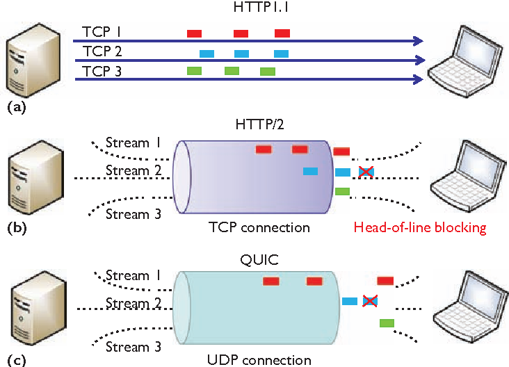
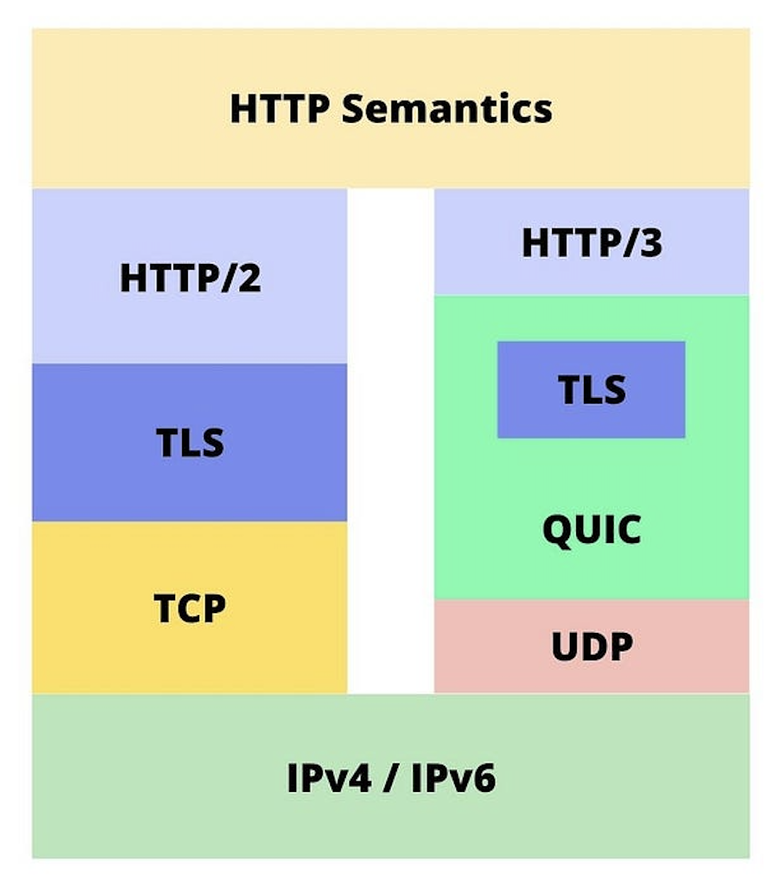

Future of HTML
The evolution of HTTP is now focused on
QUIC-based protocols, with
HTTP/3 being a major step forward. QUIC provides
stream-level multiplexing, per-stream flow control, and built-in TLS
1.3 security, reducing delay and improving stability against packet
loss.
HTTP/3 is designed for
high-performance applications that require rapid and
secure communication. Its lightweight and low-latency features, along
with transport-layer security, ensure faster and more reliable data
protection.
Adoption of HTTP/3 is growing rapidly, with studies reporting faster
connection setup and higher throughput compared to HTTP/2. Future web
applications are expected to rely more on QUIC-based transport to
enhance user experience, scalability, and overall web communication
efficiency.
1. WebTransport integration and real-time capabilities
Emerging work on WebTransport aims to provide a standardized API and
wire format for multiplexed, secure, low-latency client–server
communication on top of HTTP/3.
By enabling bidirectional streams, unsequenced datagrams, and
stream-level control within a single HTTP/3 connection, WebTransport
allows real-time interactive applications — such as multiplayer
gaming, low-latency media, and collaborative tools — to operate with
lower head-of-line blocking and improved resilience to packet loss.
This tighter integration between WebTransport and HTTP/3 positions
QUIC-based stacks as a preferable foundation for next-generation web
interactivity.

2. Performance trade-offs and implementation challenges
Although QUIC and HTTP/3 bring important advantages, they introduce
new implementation and deployment challenges.
Some measurements have shown cases where QUIC stacks incur overhead on
very fast networks or where immature implementations produce less
favorable throughput compared to optimized HTTP/2 setups.

Real-world benefits therefore depend on:
- Careful tuning of client and server stacks
- CDN and network device support for QUIC
- Continued maturity of implementations across the ecosystem
Emerging Technologies
The next evolution of HTTP will likely emphasize richer, QUIC-based
transport primitives and standardized browser APIs.
WebTransport and similar efforts create the building blocks for:
- Low-latency communication
- Multipath and multiplexed channels
- Co-existence with traditional HTTP semantics
Compared to WebSockets, QUIC-based approaches reduce head-of-line
blocking and offer better handling of packet loss and network
reordering, which is valuable for interactive and real-time
applications.
Developers can expect tighter integration between HTTP/3,
WebTransport, and evolving browser APIs, enabling robust real-time
features such as:
- Game networking
- Live collaboration
- Interactive media
Security and Privacy
Security remains central to the design of modern HTTP. QUIC integrates
TLS 1.3 from the outset, reducing round trips and protecting the
handshake and subsequent application data.
Future improvements will continue to emphasize:
- End-to-end encryption
- Stronger authentication models
- Privacy-preserving delivery mechanisms
Privacy-preserving transports, such as DNS-over-QUIC and encrypted
transport layers, reduce metadata exposure and make eavesdropping more
difficult.
Transport- and application-layer standards are expected to adopt
features that limit information leakage, mitigate fingerprinting, and
provide guarantees about data confidentiality and integrity.
AI and Adaptive Networking
AI-driven traffic optimization and adaptive networking are poised to
play an increasing role within transport and content delivery systems.
Potential advancements include:
-
AI-driven congestion and flow control: models that dynamically tune
QUIC parameters, congestion control algorithms, and stream
scheduling based on observed patterns to improve throughput and
latency.
-
Adaptive compression: on-the-fly selection of compression strategies
depending on content type, network conditions, and client
capabilities.
-
Predictive preloading: server- or CDN-side prediction of user
navigation and content needs, enabling prefetching of assets to
reduce perceived load time.
Together, these adaptive techniques allow web platforms to react in
real time to changing network conditions and user behavior, improving
reliability and perceived performance for end users.
Future Application Scenarios
In cloud-native and edge-first architectures, HTTP/3 and WebTransport
provide a unified, secure transport for services requiring low-latency
communication across regions and edge locations.
- Real-time media streaming with improved resilience
- Multiplayer and cloud gaming with reduced latency variability
-
Collaborative editing tools benefiting from multi-stream control
Additionally, as IoT and edge devices proliferate, QUIC-based
connections that minimize connection setup overhead and provide
built-in encryption become attractive for efficient, secure
device-server interactions at scale.